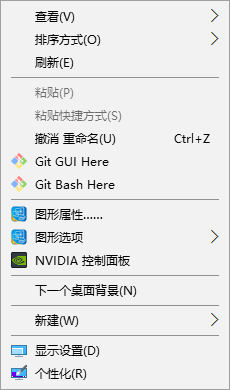
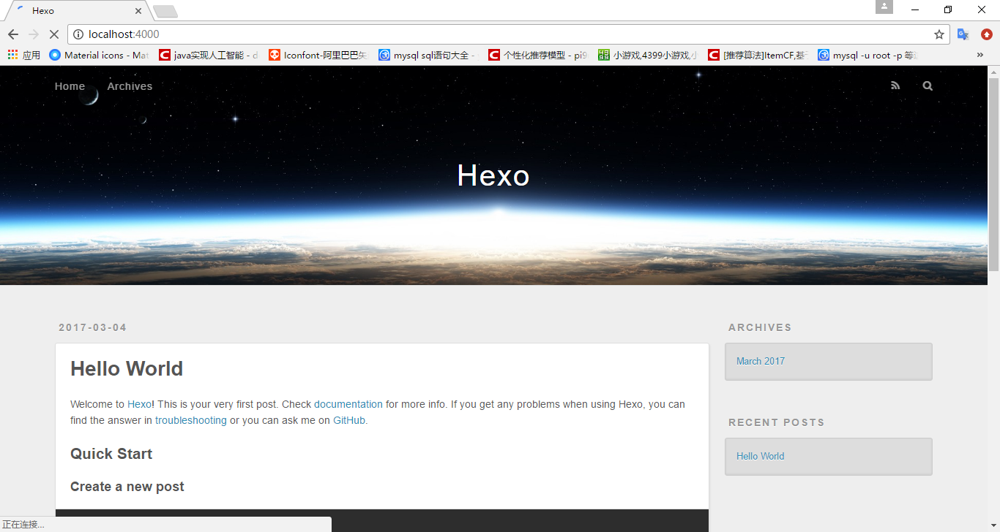
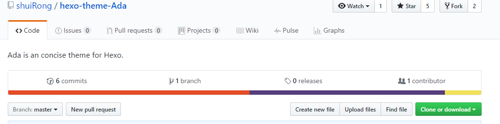
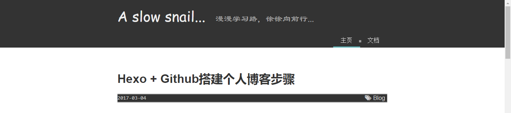
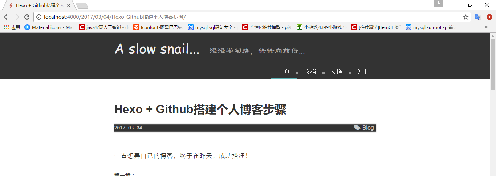
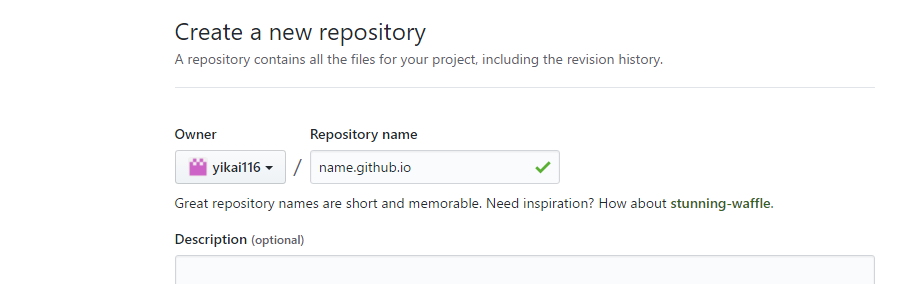
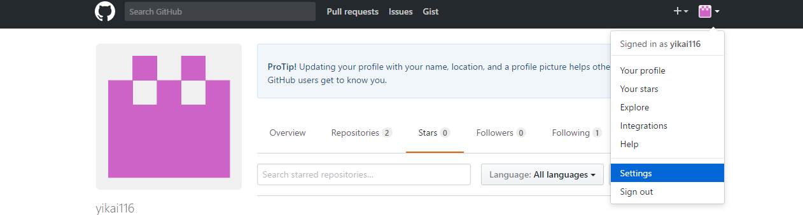
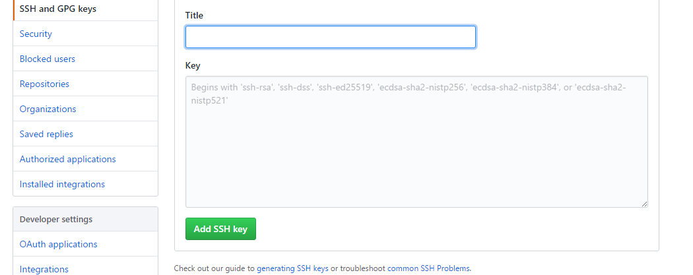

一直想弄自己的博客，终于在昨天，成功搭建！
仅限个人理解，望指教~
第一步：
有一台win10….（本人是用的win10）
第二步：
安装git。下载之后，按步骤继续就好~安装完，随意位置点击鼠标右键会有Git GUI Here和Git Bush Here，后面会用到Git Bash。

第三步：
安装Node.js。同样，官网下载之后，按步骤就好~
第四步：
打开Git Bash。执行命令,通过npm安装Hexo
由于一些原因，npm在国内的下载速度…，可以进行换源，在此只说一下淘宝的npm分流—-cnpm
1 | npm install -g cnpm --registry=https://registry.npm.taobao.org |
使用差别，只是将npm换成cnpm。
npm安装hexo命令：
1 | npm install -g hexo-cli |
或者
1 | npm install -g hexo |
-g代表全局安装。hexo-cli和hexo 我暂时不知道有什么区别….
第五步：
选择一个你觉得最乖的文件夹（此文件夹就是你的本地Blog），打开Git Bash，执行
1 | hexo init |
再执行
1 | npm install |
此时，本地博客已经搭好了~
执行
1 | hexo g && hexo s |
hexo g 是 generate
hexo s 是开启本地服务。
打开浏览器，访问localhos:4000即可…

第六步：
先讲本地一些配置吧~比如博客名等等~
打开本地博客文件夹，编辑_config.yml文件，尽量不要使用自带记事本编辑~中文可能出现乱码~
打开之后，会看到一些参数。下表来自官方文档。更详细
| 参数 | 描述 |
|---|---|
title |
网站标题 |
subtitle |
网站副标题 |
description |
网站描述 |
author |
您的名字 |
language |
网站使用的语言 |
timezone |
网站时区。Hexo 默认使用您电脑的时区。时区列表。比如说：America/New_York, Japan, 和 UTC 。 |
本人主要就修改了title 和 author…
第七步：
选择主题~
在Hexo官网或者Wiki可以找到自己想要的主题~点击主题进入该主题Github界面~在此随意选择一个~进入以下界面

点击右边clone，复制其中网址xxx，执行命令
1 | git clone xxx themes/name |
xxx：复制的网址； name：文件夹名字
主题将clone到themes文件夹下name文件夹中~
之后，修改博客文件夹下_config.yml中theme属性，设置为主题文件夹名字~
1 | # Extensions |
这是主题设置的一般步骤~
因为一些主题，会有其他要求，因此，最好的选择是根据相关主题Github界面中README中步骤进行~
第八步
添加menu选项~
主题中，可能自带的只有主页 和 文档两个菜单选项~

比如想添加一个菜单选项【关于】
执行命令
1 | hexo new page about |
about处填写自己想要的选项名字~
在source文件夹下，会出现 about 文件夹，里面有index.md。
然后打开主题所在文件夹，编辑里面的_config.yml，可以看到
1 | menu: |
此时在下面添加”关于: about”
1 | menu: |
再
1 | hexo g && hexo s |
就可以发现，选项已经变了~

第九步
写文章~
其实很简单，就是
1 | hexo new title |
title换为文章名字~在主题文件夹下 \source\_posts文件夹下，可看见title.md。
使用markdown编辑器，进行编辑就好~
编辑完成之后
1 | hexo g && hexo s |
访问本地博客，就可以阅读自己的文章啦~
第十步
之前都是在本地的~现在试着把博客挂到github上吧~
默认已经有github账号了~并且通过验证~
新建仓库

库名必须是你的github用户名.github.io
建好库之后，在电脑上创建一个SSH。
首先检查是否有SSH
1 | $ cd ~/.ssh |
没有的话，创建一个。执行下面命令时，只用敲回车就好~
1 | $ ssh-keygen -t rsa -C "your_email@email.com" |
之后，打开C:\Users\p\.ssh\id_rsa.pub，将里面的内容复制~
然后，github上~在Settings中，设置SSH。

将复制的内容粘贴在key中

记得 进入邮箱，确认验证~！！
现在Github上的工作就完了~
回到本地，编辑博客目录下的_config.yml，滚到最下面~
1 | # Deployment |
将username换成自己的github用户名~
最好是复制下来，再修改0…0，冒号是英文冒号，冒号后面有个空格….别踩这个坑….
再执行命令
1 | hexo g |
hexo d 是将本地内容上传到github~
使用hexo d时
若没反应：检查_config.yml里面是不是哪个冒号不对，或者哪儿少了空格….
Error not fount : git：执行命令
1 | npm install hexo-deployer-git –-save |
最后 hexo d一次~
好！此时，终于 完成了~此时访问username.github.io就可以看到你的文章啦~~~